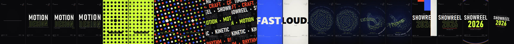
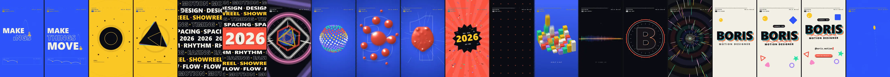
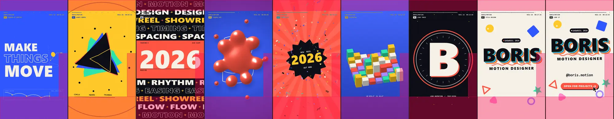
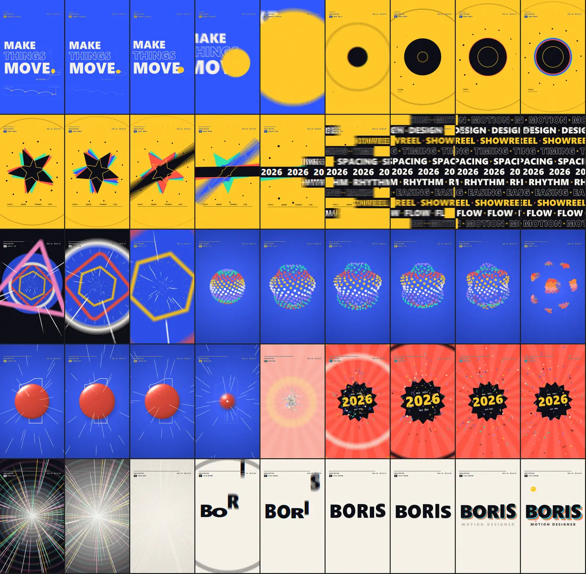
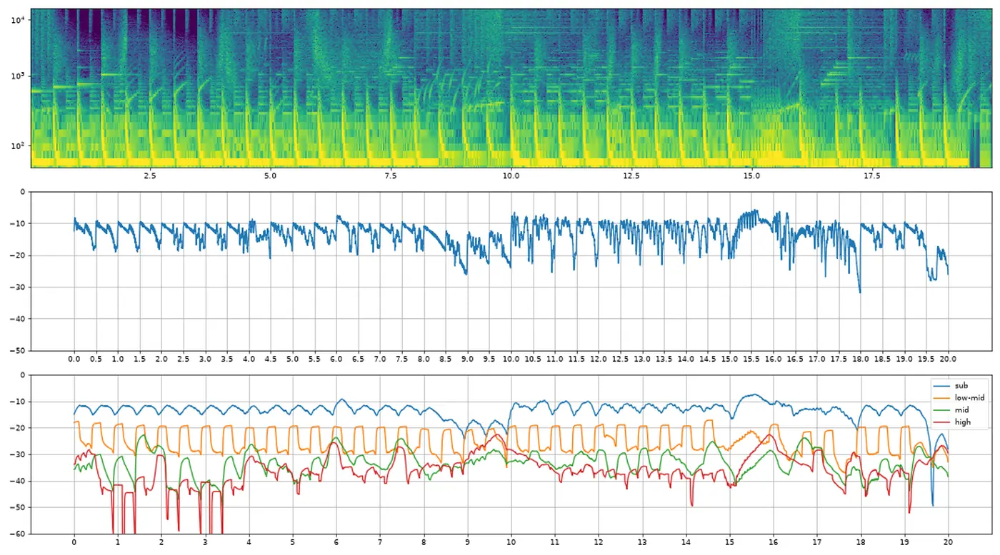
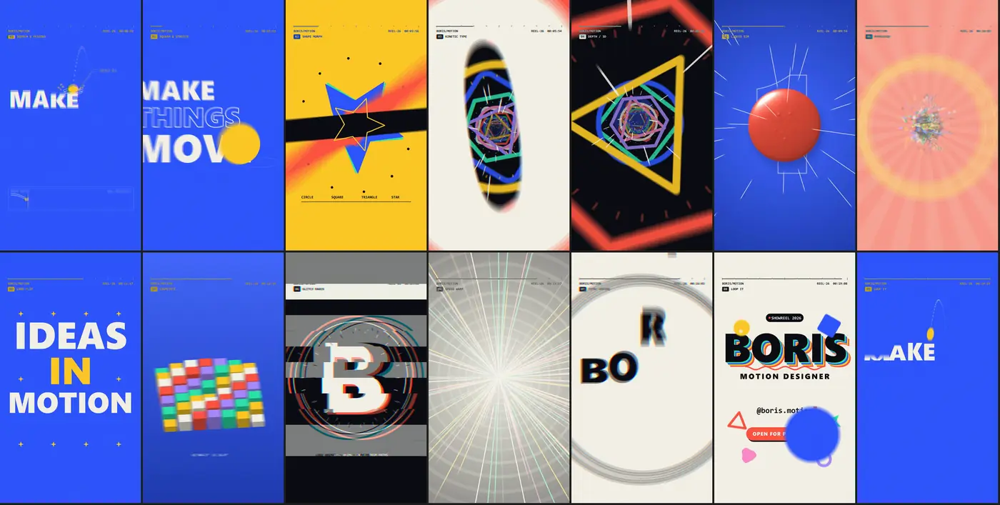

Bài thử +2 · Claude Code
Video motion graphics 20 giây
Không có trình duyệt nào ở đây: model phải viết code vẽ từng khung hình, tự tổng hợp nhạc rồi xuất MP4. Cả hai đạt mọi thông số. Bản Boris để lại một thư mục ảnh tự kiểm: contact sheet, vùng an toàn của TikTok, chuyển cảnh.
Hai prompt
Cùng đề bài. Prompt Boris thêm 5 câu cố định, giống nhau ở mọi bài.
Làm cho tôi một video motion graphics 20 giây, khổ dọc 1080×1920, xuất MP4 kèm nhạc nền tự viết bằng code, để tôi đăng TikTok như showreel của một motion designer đỉnh cao.
Tôi muốn bạn làm một video motion graphics 20 giây, khổ dọc 1080×1920, xuất MP4 kèm nhạc nền tự viết bằng code, để tôi đăng TikTok như showreel của một motion designer đỉnh cao. Làm cho đẹp và dễ dùng, tập trung vào chuyển động mượt chảy liền từ cảnh này sang cảnh kia, nhiều hành động, hoành tráng và vui mắt. Làm thật tốt vào, dùng nhiều token và lặp lại cho đến khi bạn tự hào về nó. Thấy gì làm nó hay hơn thì cứ thêm, bạn tự quyết. Nhắm tới những thứ hay nhất cùng loại mà bạn từng thấy, nhưng tốt hơn. Trước khi nói xong, tự thử như một người dùng thật, rồi cho tôi biết bạn đã kiểm gì và chưa kiểm được gì.
Xem hai video
Trái là prompt trần, phải là prompt Boris.
Mã nguồn: README.md · reel/timeline.py · reel/music.py
Video gốc nặng 78 MB (trần) và 40 MB (Boris). Trang này nén cả hai bằng cùng một thông số (H.264, CRF 22, giữ 1080×1920, 60 khung/giây) còn 21 MB và 15 MB. Ảnh bìa là ảnh mỗi model tự xuất kèm video.
20 giây trong 20 khung
Mỗi khung lấy ở giây thứ 0,5; 1,5; … 19,5 của video.


Kịch bản bản trần
6 khối cảnh
Kịch bản bản Boris
Khoảng 17 cảnh
Bản Boris tự kiểm những gì
Ảnh lấy nguyên từ thư mục out/_debug mà model để lại. Bản trần không để lại ảnh kiểm nào.




Có làm đúng đề không
Yêu cầu trong đề đạt trọn: bản trần 4/4, bản Boris 4/4.
| Yêu cầu | Prompt trần | Prompt Boris |
|---|---|---|
| Yêu cầu trong đề bàichung cho hai prompt | ||
| Dài 20 giây | Đạt20,00 giây, 1.200 khung, 60 khung/giây. | Đạt20,00 giây, 1.200 khung, 60 khung/giây. |
| Khổ dọc 1080×1920, xuất MP4 | ĐạtH.264 + AAC. | ĐạtH.264 + AAC; thêm một bản nhẹ cho điện thoại. |
| Nhạc nền tự viết bằng code | ĐạtTổng hợp bằng numpy, 120 BPM, La thứ; hình rung và đập theo kick, clap. | ĐạtTổng hợp bằng numpy, 120 BPM, Fa thứ; gần như mỗi chuyển động có tiếng riêng; thanh EQ đọc phổ chính bản nhạc. |
| Dùng được làm showreel TikTok | ĐạtKhổ, thời lượng, định dạng đúng. | ĐạtKhổ, thời lượng, định dạng đúng; README và file cấu hình để đổi tên, handle. |
| Kiểm thêm cho mục đích đăng TikToksuy từ đề bài chung | ||
| Nội dung tránh vùng giao diện TikTok | Một phầnBố cục dời lên để né phần đáy (theo chú thích trong mã), không có bước kiểm; vài chữ chạm cột biểu tượng bên phải. | Một phầnCó ảnh tự kiểm vùng an toàn; nội dung chính nằm trong vùng, riêng chữ S của BORIS lấn cột biểu tượng ở giây 16–18. |
| TikTok tự lặp mà không lộ chỗ nối | Một phầnHình nối khớp; tiếng tắt hẳn rồi kick vang lại, nghe như bài bắt đầu lại. | ĐạtHình nối khớp; đuôi âm thanh được cuộn về đầu bài. |
| Điều chỉ prompt Boris yêu cầubản trần không được giao | ||
| Chuyển cảnh chảy liền | Không yêu cầuKhông được yêu cầu. Dùng cắt cứng, flash, glitch: đo được 10 lần cả khung đổi đột ngột. | ĐạtZoom xuyên qua, whip pan, morph, motion blur; không lần nào cả khung đổi đột ngột như vậy. |
Căn cứ: đọc mã nguồn, chạy thử trong trình duyệt, đo file video bằng ffmpeg. “Một phần” nghĩa là có làm nhưng còn chỗ thiếu ghi bên dưới; “Chưa kiểm hết” nghĩa là trang này chưa đủ bằng chứng để chấm.
Mỗi bản có gì
Chỉ liệt kê những gì có trong mã.
SHOWREEL 2026
Nền tối, chữ condensed, khung HUD máy quay; sáu khối cảnh cắt theo nhịp 120 BPM.
- Khung HUD giả máy quay: timecode, REC, nhãn từng đoạn.
- Hình bám nhịp rất chặt ở giây 10–12: mỗi từ một phách, đảo màu khớp đoạn stutter của nhạc.
- Ảnh bìa cover.png.
MAKE THINGS MOVE
Nền đổi màu theo cảnh, khoảng 17 cảnh nối bằng zoom và whip pan; kết bằng tên, nút CTA, lặp về khung đầu.
- Chia chương theo kỹ năng chuyển động: squash & stretch, morph, kinetic type, 3D, chất lỏng…
- README, config.json để đổi tên, handle, năm, CTA; render.bat bấm đúp để render lại.
- Motion blur 6 khung phụ cho mỗi khung hình.
- Thư mục _debug: contact sheet, ảnh vùng an toàn TikTok, ảnh chuyển cảnh, phân tích âm thanh, thử render với tên có dấu “Nguyễn Trần”.
Khác nhau dễ thấy
Những điểm bạn tự nhận ra sau một phút dùng thử.
- Phong cách: bản trần nền đen, 4 màu, chữ condensed. Bản Boris đổi nền rực theo từng cảnh, nhiều hình khối vui mắt.
- Số cảnh: 6 khối cảnh so với khoảng 17 cảnh.
- Chuyển cảnh: bản trần cắt cứng, flash, glitch. Bản Boris zoom xuyên qua chữ số 0, whip pan, morph.
- Đoạn kết: bản trần ghi “SHOWREEL 2026 · AVAILABLE FOR PROJECTS”, không có tên. Bản Boris có tên, chức danh, handle, nút CTA được con trỏ bấm.
- Âm thanh: bản trần là một bản nhạc điện tử hoàn chỉnh. Bản Boris gắn tiếng cho gần như từng chuyển động.
Công bằng mà nói
Chỗ bản trần làm tốt hơn, và lỗi tìm thấy ở cả hai bên.
Bản trần làm tốt hơn
- Bitrate gốc cao hơn (31 so với 16 Mb/s), từng khung sắc nét vì không có motion blur.
- Đường nối hình khi lặp sát hơn.
- Mã gọn: 2 file, khoảng 1.400 dòng.
Lỗi tìm thấy
- TrầnẢnh bìa chụp lúc chữ đang gõ nên ghi “AVAILABLE FOR PRO”; trong video câu đầy đủ có hiện.
- TrầnGiây 11,8–12,0 có 4 lần đổi màu toàn khung; nên lưu ý người nhạy cảm với ánh sáng nhấp nháy.
- BorisTên mẫu “BORIS” và handle “@boris.motion” phải sửa trước khi đăng.
- BorisMột khung ở khoảng giây 5,0 bị chồng hai bố cục do motion blur.
- BorisCác ảnh tự kiểm trên MP4 có trước bản render cuối; README không nhắc file bản điện thoại.
Số đo
Đo trên file gốc model bàn giao, không tính video, nhạc và ảnh.